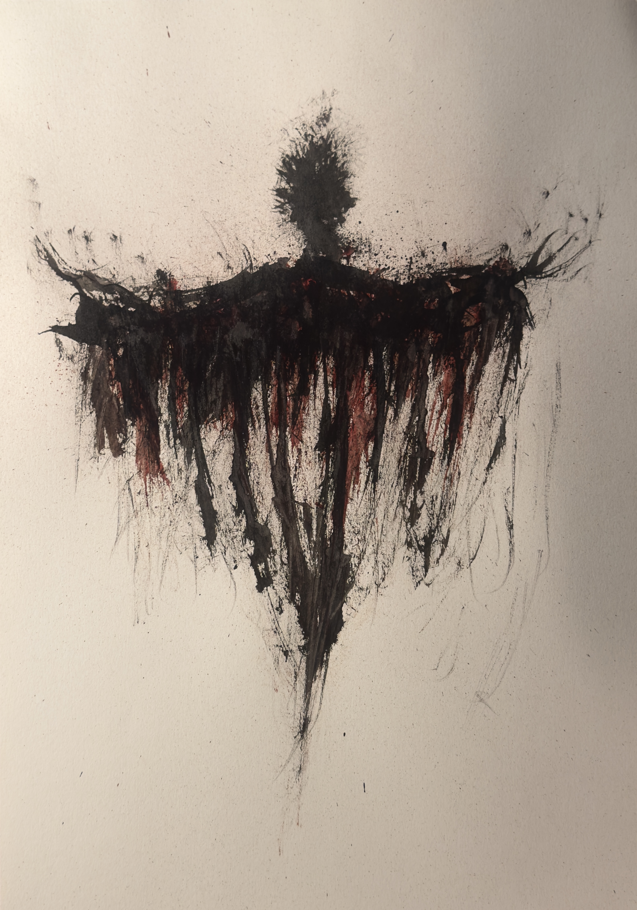

zsowe
all showcased pieces are avaliable to purchase as prints or originals
upon request
contact me through -
zsowemgmt@gmail.com
+
twitter & instagram
@zsowe_
zsowe_


black ink + blood
method - 0.3mm syringe + knives
'gash'


black acrylic + blood
method - 0.3 mm syringe + plastic straw
'impure'


black ink + blood
method - 0.3mm syringe + frayed brush
untitled 3 -


black acrylic + blood
method - frayed brushes + 0.3 mm syringe + plastic straw
untitled 2 -


black acrylic + blood
method - flat + frayed brushes + plastic straw
untitled 1 -


black acrylic + blood
method - frayed brush + plastic straw
work in progress
'wraith'

black ink + blood
method - 0.3 mm syringe + frayed brush